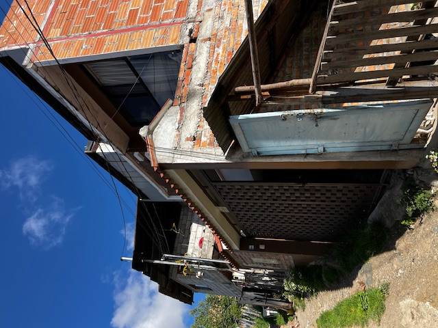
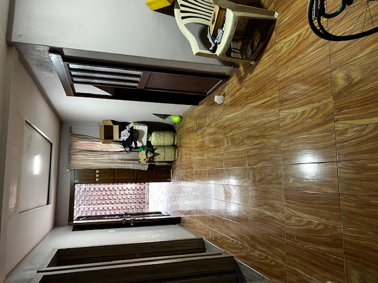
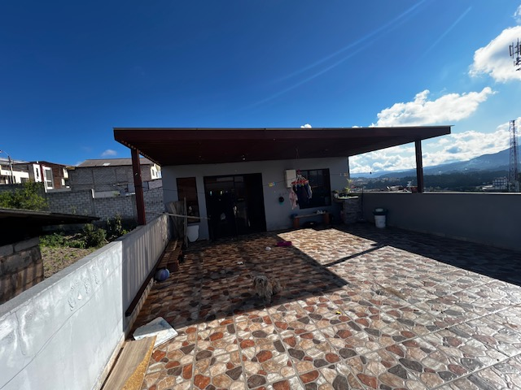
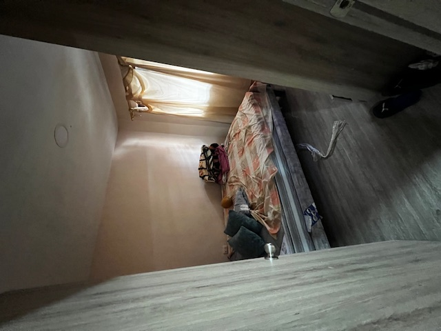
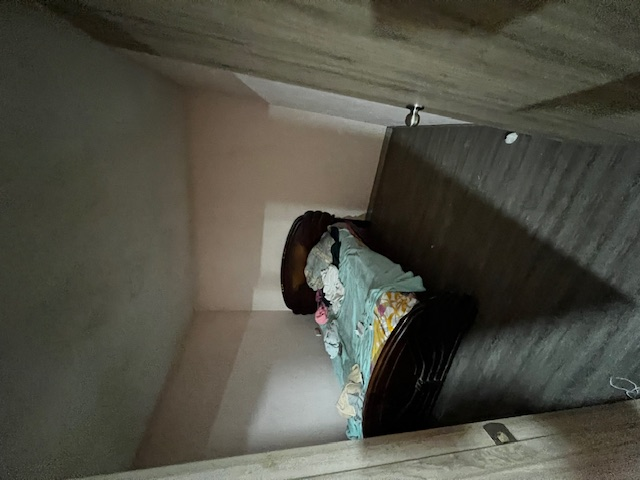
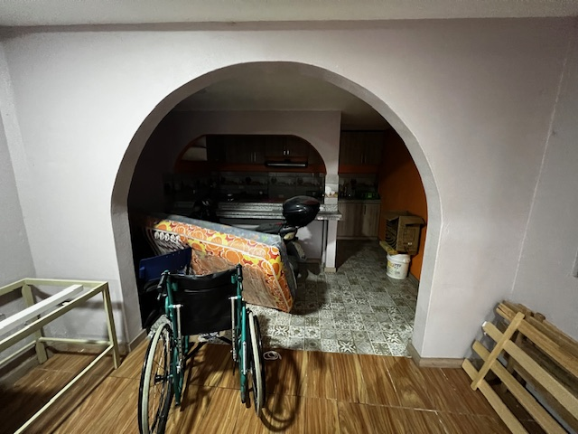
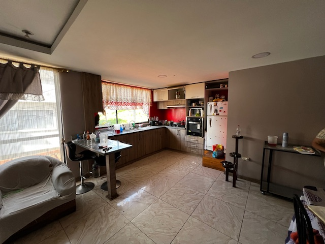

← volver al mapa
Casa - EC-RJ-155101
EC-RJ-155101 · casa · CUENCA, Azuay







Datos del remate
| Avalúo pericial | $81,304 |
| Tipo de bien | casa |
| Cantón / Provincia | CUENCA, Azuay |
| Dirección / Sector | Visorey |
| Señalamiento | Retasa de Bienes |
| Fecha de remate | 2026-08-20 |
| No. de proceso | 01204202401866 |
Análisis vs. mercado
Descartado del análisis automático: sin área/precio conocido para calcular precio por m².
Descripción completa del avalúo
l bien inmueble de esta pericia, se trata de un predio que está ubicado en el zona urbana dela parroquia hermano miguel del cantón cuenca, en el sector conocido como visorey.dentro del predio se encuentra una vivienda de dos plantas dedicadas a vivienda, existe un tercer nivel que únicamente tiene un solo cuarto y una terraza que se conecta a ésta, toma toda el área de la 1era planta alta, al momento de la inspección se verifico que se encuentra habitada únicamente la planta alta y laterraza, la planta baja se encuentra deshabitada.la casa habitación consta de:planta baja: garaje, sala-comedor, cocina, baño completo, circulación vertical de h°a° yrevestida de cerámica. 3 habitaciones1era planta alta: corredor distribuidor, 1 dormitorio, estudio, baño completo, sala, comedor,cocina, un dormitorio master con baño completo, circulación vertical de madera.2da planta alta: lavandería general, área libre en terraza cubierta parcialmente.
Esta ficha es una copia de lo publicado en el sitio oficial de remates
judiciales de la Función Judicial del Ecuador, para consulta — no
reemplaza el expediente judicial. remates.funcionjudicial.gob.ec no da
un link propio por remate, por eso se generó esta página aparte.
Antes de ofertar, el expediente debe revisarlo un abogado.